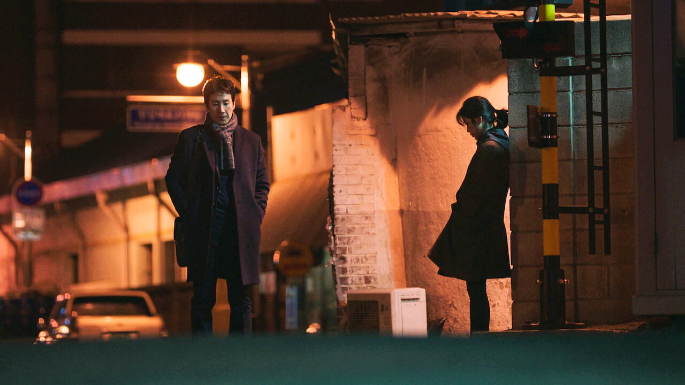

나의 아저씨
2018 | 15+ | 시즌1개 | 드라마 장르
순리대로 살지만 소년의 순수성과 어른의 지혜를 갖춘 아저씨가 있다. 그런데
이상한 애가 그를 흔든다. 거친 인생을 살아온 무모한 스물한 살 그녀가. 어느덧
우정이 움트고, 둘은 서로에게 안식처가 된다. 이 차가운 세상에서.
주연 : 이선균,아이유,고두심
크리에이터 : 김원석,박해영
무제한으로 즐기세요
영상
| 나의 아저씨
예고편: 나의 아저씨
회차
| 나의 아저씨
나의 아저씨
공개일 : 2018
회사 동료인 동훈과 지안. 훅 들어오는 지안의 태도에 동훈은 당황하지만, 채무에 시달리던 지안은 빚 갚을 기회를
노릴 뿐이다. 어쩌다 사내 정치로 엮인 두 사람. 갈수록 어쩐지 서로 의지가 된다. 팍팍한 삶을 보듬을 웰메이드
드라마.
노릴 뿐이다. 어쩌다 사내 정치로 엮인 두 사람. 갈수록 어쩐지 서로 의지가 된다. 팍팍한 삶을 보듬을 웰메이드
드라마.
-
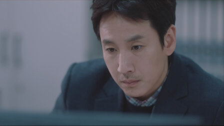
제1회
88분어머니와 백수 신세인 형과 동생을 책임져야 하는 동훈. 오늘도 출근하는 발걸음이 무겁다. 그런데 이게 무슨 일일까. 수상한 물건이 든 봉투가 그에게 배달되어 왔다. -
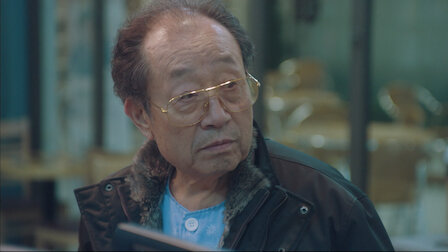
제2회
72분뇌물 수수로 오해받는 것도 곤란한데 돈까지 사라지다니. 동훈은 회사 동료 지안을 의심한다. 지안은 사채를 갚으려던 계획을 변경하고, 뇌물 사건에 더 깊이 발을 들인다. -
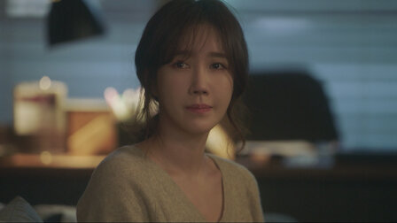
제3회
76분박 상무의 사무실에 도청 장치를 설치하는 지안. 그녀는 새로운 '거래'를 위해 동훈에게 의도적으로 접근하고, 지안의 꿍꿍이를 알 리 없는 동훈은 그녀의 부탁을 수락한다. -
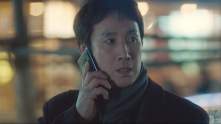
제4회
78분이 여자, 분명 무언가 있다. 점점 무모해지는 지안 때문에 불안한 준영. 그는 뒷조사를 통해 지안의 과거를 알아낸다. 한편 상훈과 기훈은 사업으로 새 출발을 하려 한다. -
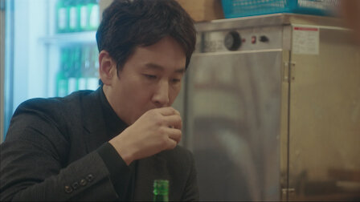
제5회
77분동훈이 준영의 통화 기록을 가지고 있다니. 동훈의 전화를 도청하다 뜻밖의 사실을 알게 된 지안. 지안은 이를 준영에게 알리고, 작전을 변경한다. 조금 더 확실한 것으로. -
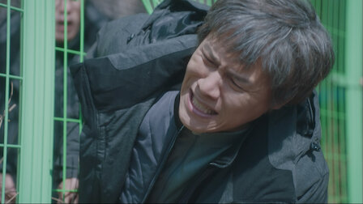
제6회
75분윤희는 동훈에게 일을 그만두라고 설득한다. 윤희의 의도를 알아채고 충격에 빠진 동훈. 지안은 동훈에게 묘한 동질감을 느끼기 시작한다. 그의 슬픔에서 내 슬픔이 보인다. -
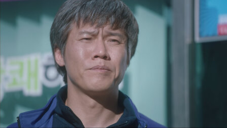
제7회
78분자신이 아는 모든 것을 밝히며 준영과 담판 짓는 동훈. 이로 인해 준영과 윤희의 관계에도 변화가 생긴다. 궁지에 몰린 준영은 지안에게 계획을 잠시 중단할 것을 요청한다. -
제8회
80분동훈에게 마음을 열기 시작하는 지안. 이를 광일이 지켜보고 있다. 저놈은 대체 누굴까. 동훈이 상무직 후보에 오르자 마음이 급해진 준영은 지안에게 또 다른 요청을 한다. -
제9회
78분제대로 된 무기가 생겼다. 지안을 믿고 마음을 놓는 준영. 동훈이 상무 후보에 올랐다는 소식을 들은 식구들은 벌써부터 잔치 분위기다. 반대 공작이 진행되는 줄도 모르고. -
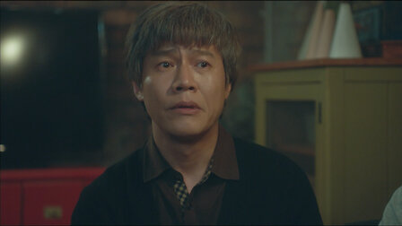
제10회
78분동훈의 심상치 않은 상처를 보고 걱정하는 식구들. 동훈은 입을 다문다. 광일이 대범해지기 시작하자 지안은 빚을 모조리 갚아 버린다. 이제 제발 내 인생에서 사라져 주라. -
제11회
79분진급 인터뷰가 코앞으로 다가왔다. 동훈의 약점을 캐려는 사람들과 동훈을 밀어주려는 사람들. 그 사이에 지안이 있다. 지안이 심어놓은 작은 덫들이 하나씩 드러나는 순간. -
제12회
81분윤희의 깊은 속마음을 들은 동훈은 무거운 마음으로 결혼 생활을 돌아본다. 지안은 퇴근길에 우연히 동훈과 둘이 남겨지고, 처음으로 동훈의 식구들을 만나 함께 어울린다. -
제13회
80분동료 직원 인터뷰 중 지안의 발언으로 곤란해진 준영. 그는 지안에게 경고하지만, 거꾸로 발목을 잡힌다. 박 상무는 추적 끝에 자신을 꾐에 빠뜨린 이들의 실체에 다가선다. -
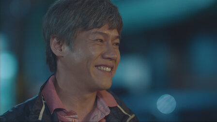
제14회
79분숨기고 싶었던 과거가 드러나자 자취를 감추는 지안. 동훈조차도 그녀의 흔적을 찾을 수 없다. 한편 그녀의 도청 파일이 또 다른 속셈이 있는 누군가의 손에 들어간다. -
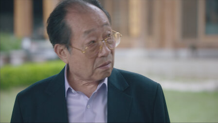
제15회
80분그동안의 지안의 행적을 알게 된 동훈과 윤희. 그럼에도 이들은 지안을 돕기로 하고, 그녀를 찾아 헤맨다. 하지만 동굴 밖으로 나오려면 지안은 먼저 모든 것을 밝혀야 한다. -
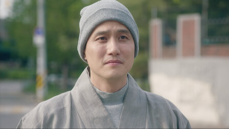
제16회
91분증거 불충분을 노리고 지안에게 모두 뒤집어씌우려는 준영. 하지만 전과는 달리, 그녀는 이제 혼자가 아니다. 묵묵히 곁을 지키는 사람들이 있다. 그녀가 편안함에 이르도록.
상세 정보
오프라인 시청
장르
시리즈 특징:
저장 기능은 광고 없는
멤버십에서만 이용 가능합니다.
멤버십에서만 이용 가능합니다.
드라마,한국 드라마
힐링,감상적,감명을 주는
출연
이선균
김영민
김영민
아이유
고두심
박호산
송새벽
함께 시청된 콘텐츠


공개 임박
메니페스트
사냥개들
바비의 인어 공주 이야기
레지던트 이불 2
리키줌
비행기가 착륙하니 세계는 불가사의하게도
이미 수년이 지나있고, 시간의 흐름이
캄승객들만 비껴간 것 같다. 도착한 승객들은
기이한 새로운 현실과 마주한다.
이미 수년이 지나있고, 시간의 흐름이
캄승객들만 비껴간 것 같다. 도착한 승객들은
기이한 새로운 현실과 마주한다.
두 청년 복서가 선한 대부업자와 한뜻으로
뭉친다. 돈 때문에 절박한 약자들을 먹잇감
삼는 악랄한 사채업자에 대적하기 위해.
뭉친다. 돈 때문에 절박한 약자들을 먹잇감
삼는 악랄한 사채업자에 대적하기 위해.
자신이 인어라는 사실을 알게 된 소녀 멀리아.
서핑 챔피언인 멀리아는 돌고래의 도움을 받아
오세아나의 여왕인 엄마를 구해야 한다!
서핑 챔피언인 멀리아는 돌고래의 도움을 받아
오세아나의 여왕인 엄마를 구해야 한다!
죽음의 바이러스가 확산되자 봉쇄에 들어간
라쿤 시티. 좀비와 함께 그곳에 갇힌 앨리스와
엘리트 군단은 새로운 악의 등장을 마주한다.
라쿤 시티. 좀비와 함께 그곳에 갇힌 앨리스와
엘리트 군단은 새로운 악의 등장을 마주한다.
리키 줌과 단짝 바이크 친구들이 바이크 마을
휠포드를 쌩쌩 달려요. 구조 임무도 해내고
빠르게 움직이는 스턴트도 배운답니다.
우리도 함께 신나게 달려볼까요!
휠포드를 쌩쌩 달려요. 구조 임무도 해내고
빠르게 움직이는 스턴트도 배운답니다.
우리도 함께 신나게 달려볼까요!
아놀드
러브 데스티나: 더 무비
뷰티풀 라이프
보디빌딩 챔피언부터 시작해 할리우드
아이콘을 거쳐 정치인이 되기까지, 아놀드
슈워제네거의 다각적인 삶과 커리어를 따라가는
내밀한 다큐시리즈.
아이콘을 거쳐 정치인이 되기까지, 아놀드
슈워제네거의 다각적인 삶과 커리어를 따라가는
내밀한 다큐시리즈.
다른 생에서 사랑했던 여인을 꿈에서 본 한
남자. 그녀를 다시 만나게 될 운명이라고
믿는다. 하지만 정체를 알 수 없는 시간 여행자가
나타나 그의 계획을 방해한다.
남자. 그녀를 다시 만나게 될 운명이라고
믿는다. 하지만 정체를 알 수 없는 시간 여행자가
나타나 그의 계획을 방해한다.
남다른 재능을 숨기고 살던 청년 어부가 어느
날 한 음악 프로듀서의 눈길을 끈다. 그의
앞에서 손짓하는 스타덤과 사랑. 그는 이 새로운
길에 뛰어들 준비가 되었을까?
날 한 음악 프로듀서의 눈길을 끈다. 그의
앞에서 손짓하는 스타덤과 사랑. 그는 이 새로운
길에 뛰어들 준비가 되었을까?